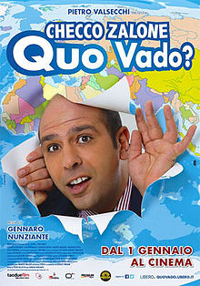
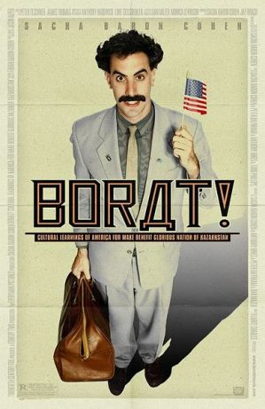
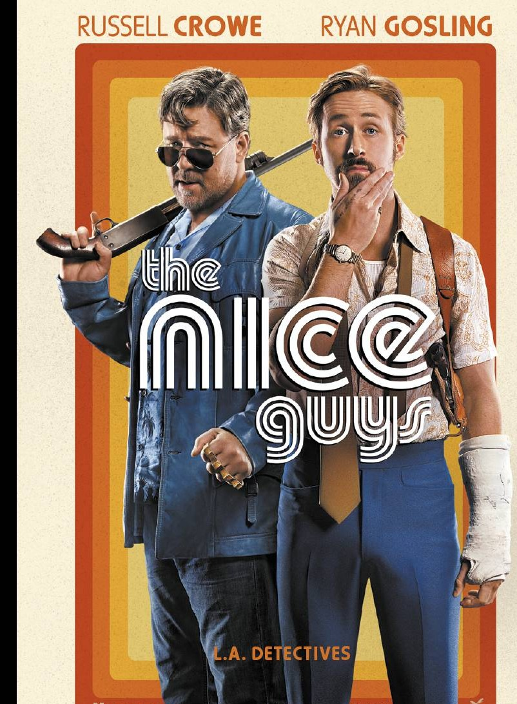

After 18 years of life it has been decided that due to his amazing qualities as a human being he shall be named the most amazing man in the world. Bravo!
Seriously check it out|  |
Quo VadoA wonderful movie with the comedy master Checco Zalone, who impersonates an Italian worker settling into foreign countries. |
|  |
BoratKazakh TV talking head Borat is dispatched to the United States to report on the greatest country in the world. With a documentary crew in tow, Borat becomes more interested in locating and marrying Pamela Anderson. |
|  |
Nice GuysIn 1970s Los Angeles, a mismatched pair of private eyes investigate a missing girl and the mysterious death of a porn star. |